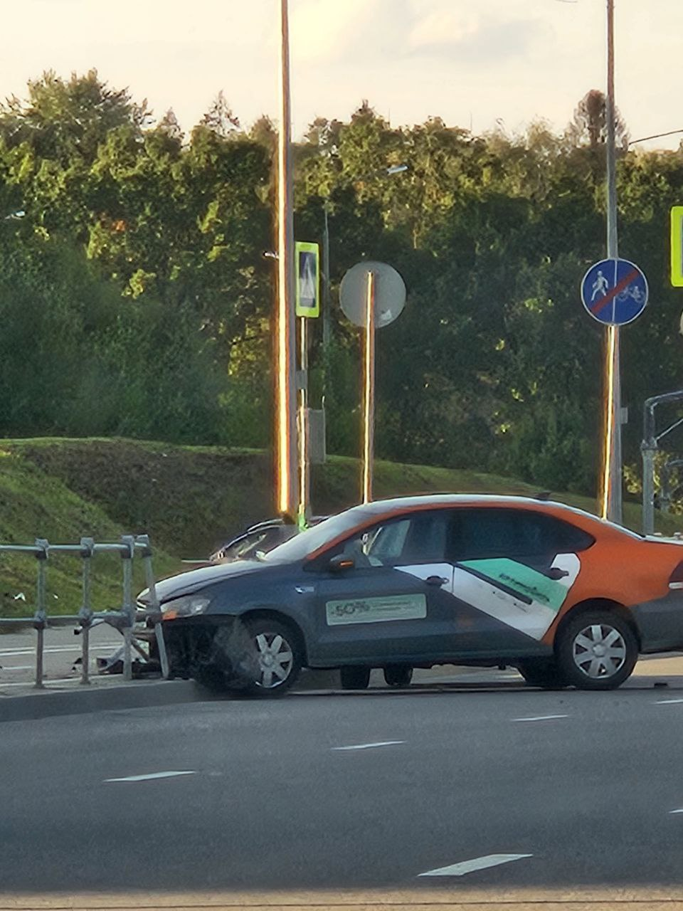
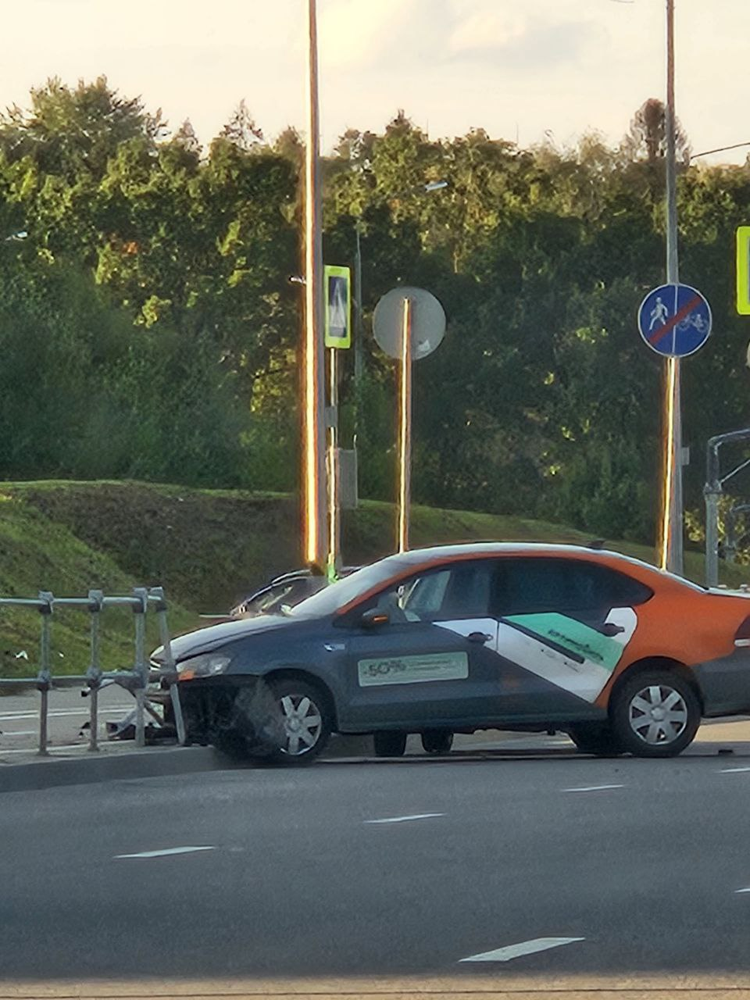

Большие автозапчасти
Средние автозапчасти
Маленькие автозапчасти
Все автозапчасти!
Автозапчасть это
У нас есть:
Детали для двигателя
Детали для салона
Детали для дверей
Детали
для
колёс
Дви́гатель вну́треннего сгора́ния
(ДВС)
— разновидность
теплового
двигателя в котором топливная смесь
сгорает
непосредственно в рабочей камере (внутри) двигателя.
Продукты сгорания образуют
рабочее
тело. Такой двигатель является
первичным,
химическим,
и преобразует энергию сгорания топлива в механическую работу.
Андрей Гарольдович Кнышев:
„Для колеса истории Россия — несомненно, двигатель, причем внутреннего сгорания.“
Каталог:
- Масло и автохимия
- Шины, диски
-
- Автоэлектроника
- Остальное тоже есть)
Что такое...?
- Моторное масло
- — это масла, применяемые главным образом для охлаждения и снижения трения между движущимися деталями поршневых и
роторных двигателей внутреннего сгорания.
- — это смесь двух компонентов – базового масла и пакета присадок.
- Масла трансмиссионные
- — это смазочные масла, применяемые для смазки коробок передач, раздаточных коробок, главных передач ведущих
мостов,
рулевых механизмов,[1] а также зубчатых и цепных передач (редукторов) всех видов.
- — это специальный состав, использующийся для защиты деталей коробки перемены передач, коробки основных передач
ведущих мостов, раздаточной коробки, рулевых механизмов, а также различных видов цепных и зубчатых передач
(редукторов).
- Жидкости для омывателя стекла
- — это вода, в которую в определенной концентрации добавлен спирт, поверхностно-активные вещества (моющие
средства), ароматизаторы или отдушки, которые нейтрализуют резкий запах растворителей, и красители.
- Жидкости тормозные
- — это специальная жидкость, предназначенная для заполнения гидравлической тормозной системы автомобиля и
обеспечивающая её работоспособность при любых условиях эксплуатации.
- Жидкости охлаждающие
- — это жидкость, играющая роль теплоносителя в системе охлаждения двигателя внутреннего сгорания и других
машин.
Автозапчасти по картинкам:
 

К большим автозапчастям
К средним автозапчастям
+7 (977) 945-64-92
Написать главе на почту